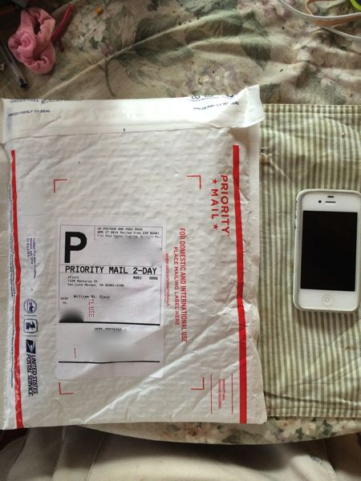
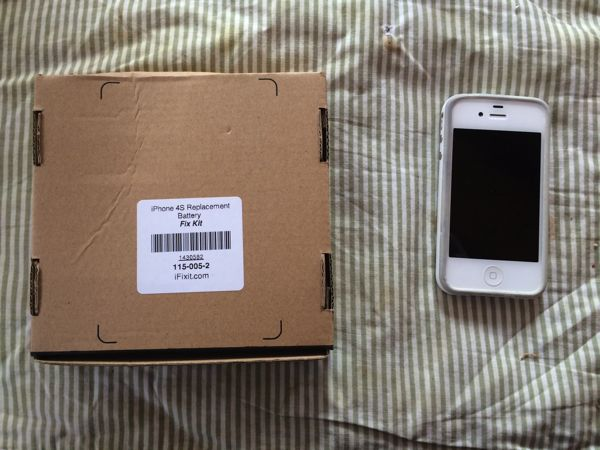
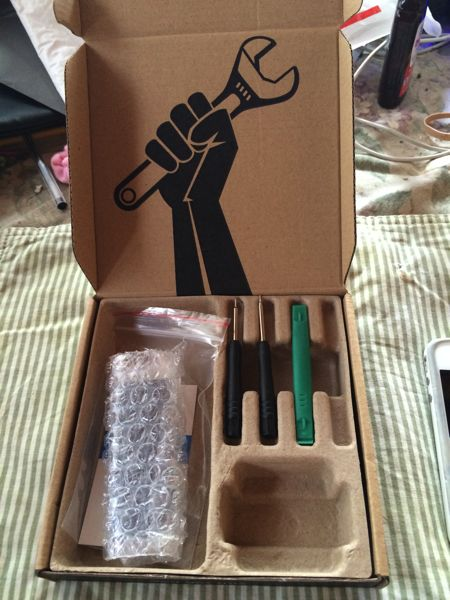
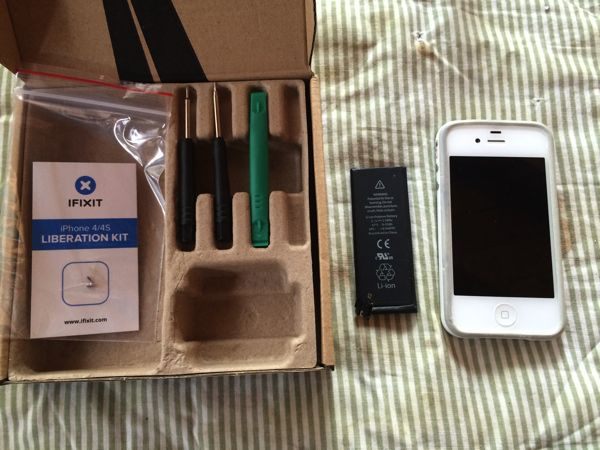
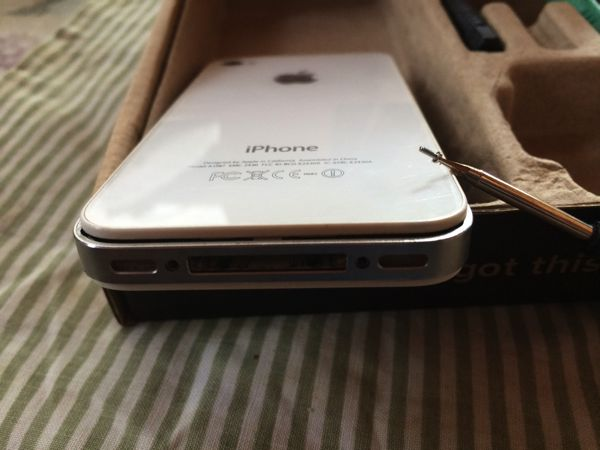
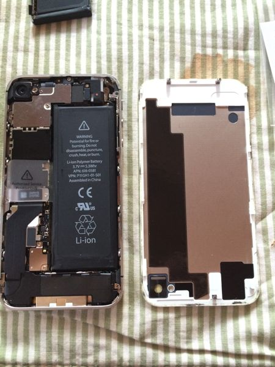
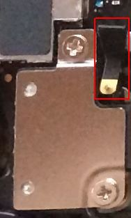
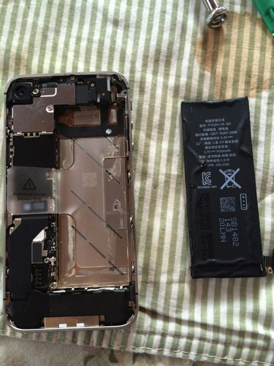

On Saturday, 19 April, 2014, I received a battery replacement kit from iFixit for my old iPhone 4S. My daughter has been using it as a wifi browser and music player since I upgraded to a 5S. She wants to use it as her phone, too, but the battery life wasn't sufficient for that, so I bought a replacement kit.
I followed the directions in the iFixit App on my 5S. The same directions are on iFixit's web site.
I needed a small pair of needle-nose pliers to remove and reinsert the "pressure contact" under the top screw of the battery connector (see photo 7 below).
The only hard part of the procedure was prying the battery loose from its adhesive. It took enough pressure that I was worried I might break the case. But it eventually came loose.







7. Battery Connector & Red-Outlined Pressure Contact
